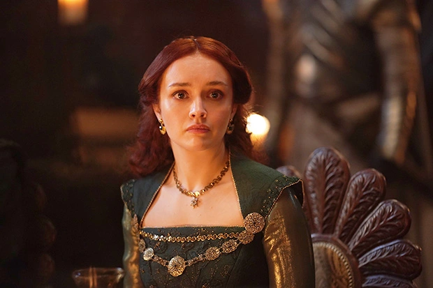
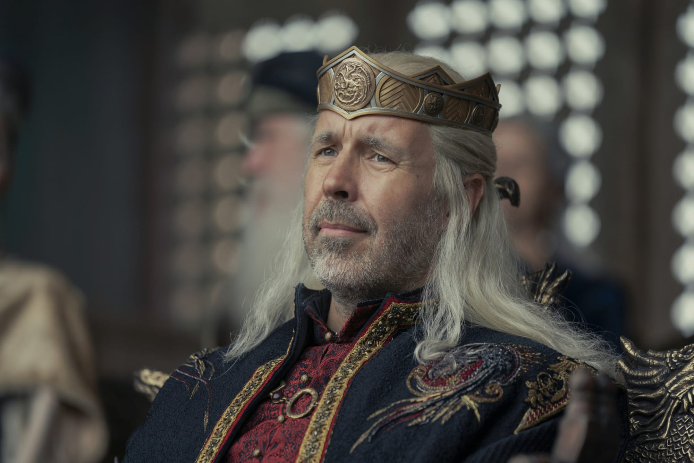
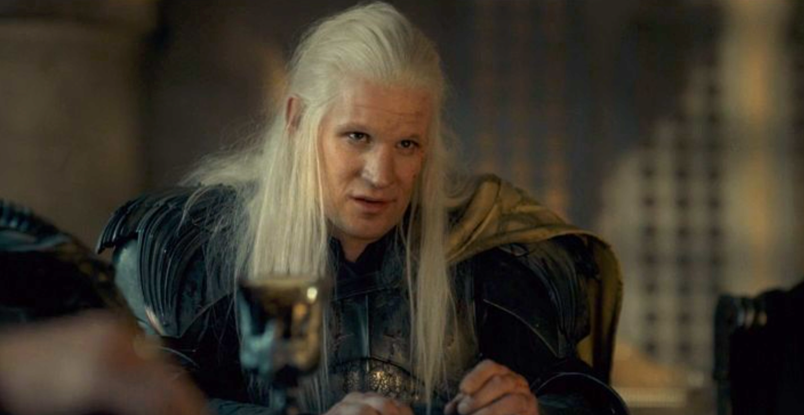
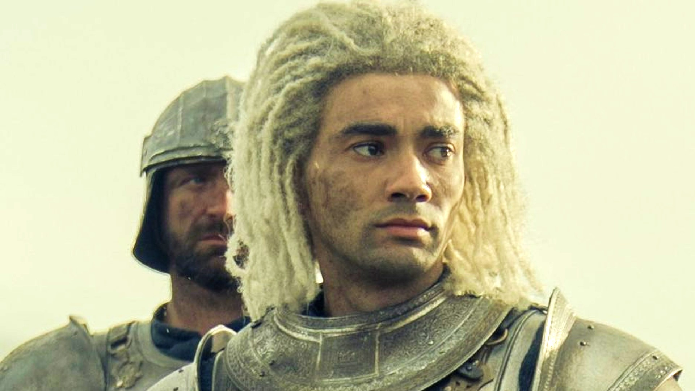
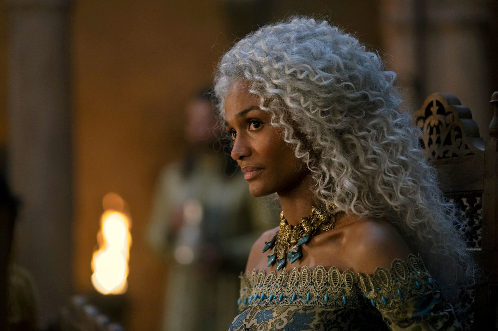

Rhaenyra Targaryen is the first-born daughter of King Viserys I Targaryen and Queen Aemma Arryn. As a strong-willed and independent young woman, her father named her heir to the Iron Throne. Married to Ser Laenor Velaryon, she is the mother of three sons: Jacaerys, Lucerys, and Joffrey.
Alicent Hightower

Queen Alicent Hightower is the wife of King Viserys I and mother of Aegon, Helaena, and Aemond Targaryen. She maintains a fierce allegiance to her house and family, causing her rivalry with Princess Rhaenyra to grow. Their rift has spilled over into their children as well, threatening the stability of the realm.
King Viserys

The grandson of the Old King Jaehaerys, Viserys Targaryen was ultimately chosen by the lords of Westeros over his cousin Princess Rhaenys Targaryen to rule. A level-headed decision maker, his reign has been peaceful, though not without its challenges. He has a daughter, Princess Rhaenyra Targaryen, from his marriage to Queen Aemma Arryn. Upon Aemma's death, Viserys married Alicent Hightower.
Daemon Targaryen

The younger brother of King Viserys I Targaryen, Daemon Targaryen is a fierce, albeit unpredictable warrior. He is no stranger to ruffling feathers, particularly those of his brother. His bravery and sword fighting skills played a pivital role in the War for the Stepstones.
Laenor Velaryon

The son of Lord Corlys Velaryon, the Sea Snake, and Princess Rhaenys Targaryen, the Queen Who Never Was, Ser Laenor is a powerful knight. Husband and king consort to Princess Rhaenyra Targaryen, the pair have three sons: Jacaerys, Lucerys, and Joffrey. Laenor loves his children and the question of their legitimacy does not bother him - he too has secrets of his own.
Laena Velaryon

Laena Velaryon was the wife of Prince Daemon Targaryen, mother to Baela and Rhaena, and a valiant dragon rider. She was the daughter of Lord Corlys Velaryon and Princess Rhaenys Targaryen. She died during her third pregnancy, before bringing the baby to term.